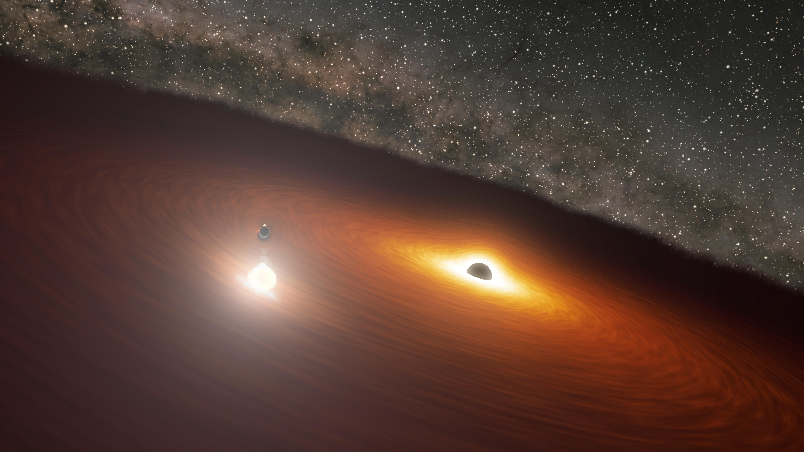
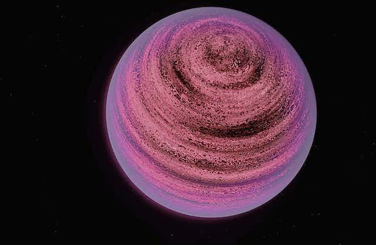
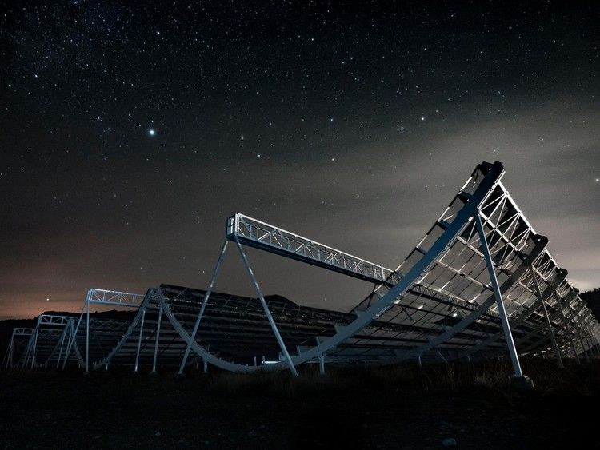
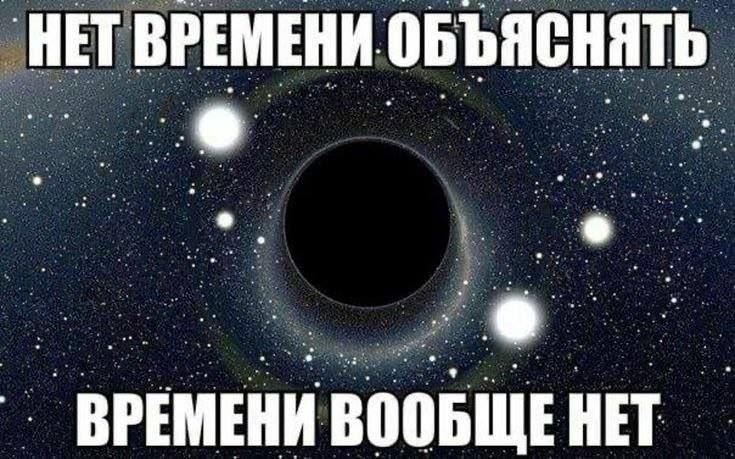
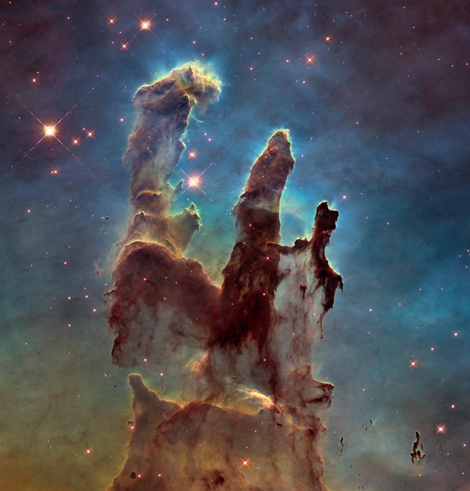

Исследуй самые удивительные явления, объекты и открытия нашей Вселенной

Одни из самых загадочных объектов во Вселенной

Необычные миры, которые удивляют даже учёных

Загадочные радиосигналы, которые приходят к нам из глубин Вселенной

Разбираемся в главных вопросах о космосе, про каторые не расскажут в школе

Путь от газопылевого облака до рождения новой звезды